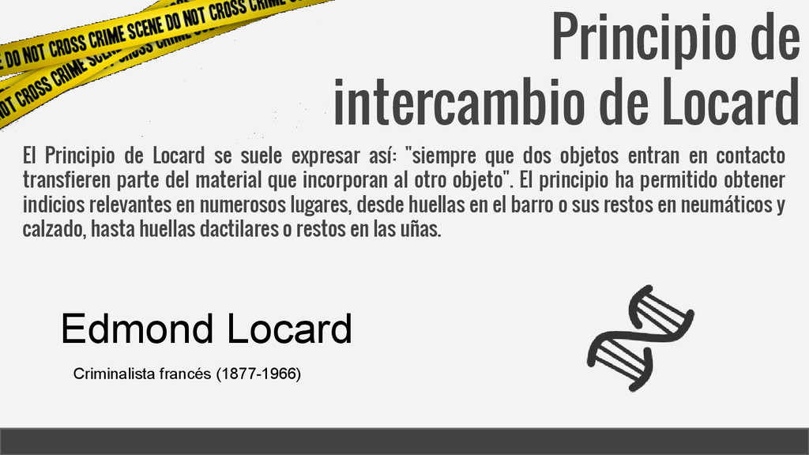
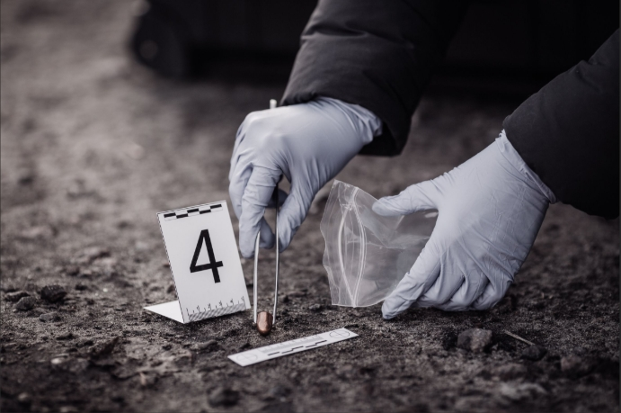
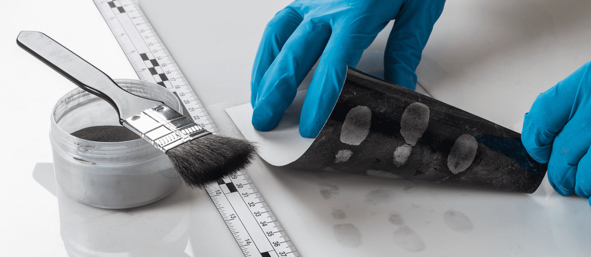
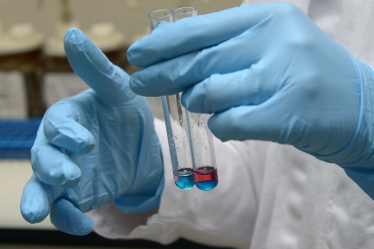

Si la criminología es la teoría, la criminalística es la acción pura. Esta es la disciplina técnica y científica que aplica conocimientos de química, física y biología para analizar la evidencia física recolectada en la escena de los hechos.
El principio fundamental de la criminalística fue dictado por Edmond Locard: "Todo contacto deja rastro". Esto significa que es imposible que un criminal actúe sin dejar algo de sí mismo en la escena o sin llevarse algo de ella consigo.

El trabajo del perito en criminalística es hacer que esos rastros invisibles cuenten la historia de lo que sucedió. Desde una huella dactilar borrosa hasta una mancha microscópica de sangre, todo es vital para armar el rompecabezas judicial.
Para que esta evidencia sea válida en un juicio, debe pasar por algo llamado "Cadena de Custodia". Es un registro estricto de quién recogió la prueba, cómo se guardó y quién la analizó, garantizando que nadie la haya alterado.
| Especialidad | Descripción | Imagen de Referencia |
|---|---|---|
| Balística Forense | Estudio de armas de fuego y trayectorias de balas. |  |
| Dactiloscopia | Análisis y comparación de huellas dactilares. |  |
| Química Forense | Búsqueda de venenos, drogas o sustancias químicas. |  |
Gracias a la tecnología moderna, los laboratorios pueden encontrar respuestas en días que hace algunas décadas hubieran sido misterios eternos.